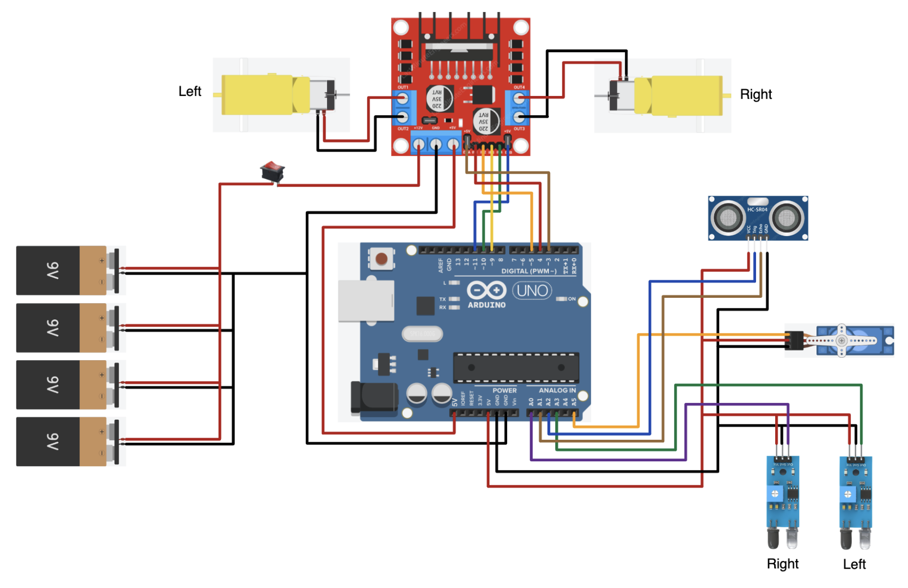

Arduino Robot Car
Overview
- This project used an Arduino UNO to control the robot.
- I designed the chassis using SolidWorks and then 3D-printed and assembled it.
- I wrote several sketches using the Arduino IDE to program the robot for different functionalities including:
- Follow a 1.5" black line
- Avoid obstacles
- Follow a line and avoid obstacles placed on the line
- Be controlled by a phone via Bluetooth
Background
Growing up, I always wanted to build a robot. When I started UBC and discovered the Open Robotics student design team which had a special program for first- and second-year students to teach them about robotics, build their own robot, and compete in an intramural competition, I immediately signed up. Unfortunately, due to the circumstances that year, the program was not carried through. However, my eagerness to learn and to build my own robot persisted, so I decided to take on this project on my own in the following summer. Therefore, some of the goals I had for the design stemmed from the competition requirements for Open Robotics.
Project Goals
- Follow a 1.5" black line while avoiding obstacles that are placed on the line.
- Climb a 30-degree incline.
- Cross a 25-mm gap using a castor ball with a 12-mm diameter.
- Be controlled by a phone via Bluetooth.
Design Choices
- I decided to use a 2WD design so that there would be less friction when turning and to allow for faster speeds with less power.
- I put the two wheels at the back instead of the front to allow for smoother turns when following the line.
- I decided to use four 9V batteries in parallel instead of six AA batteries in series since the 9V batteries could supply the same amount of power for a longer duration.
- I placed the batteries directly over the axis of the back wheels to have better traction and climb a steeper incline.
Sketches
Here are some of the sketches I made when designing the chassis:

Diagram
Here is the diagram that I created and followed for wiring the components.
Results
- Crossed a 25-mm gap using a castor ball with a 12-mm diameter.
- Climbed a 27-degree incline.
- Followed a 1.5" black line.
- Avoided obstacles.
- Followed a 1.5" black line while avoiding obstacles placed on the line.
- Could be controlled by a phone via Bluetooth using an app I created with MIT App Inventor.